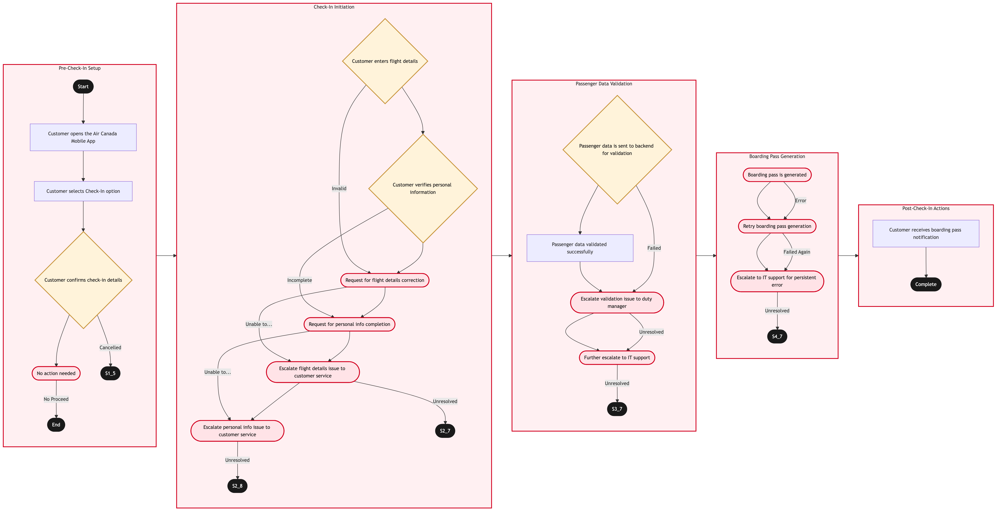

Updated 2026-08-20
Mobile App Check In and Boarding Pass Issue
Process flow
Click to zoom

Process steps
▼
Phase 1 — Pre-Check-In Setup
4 steps
| Step | Activity | Role | System | Input | Output | KPI | Dec | Exc | Pain point |
|---|---|---|---|---|---|---|---|---|---|
| 1.1 | Customer opens the Air Canada Mobile App | Airline Passenger | Air Canada Mobile AppA | Mobile app launch | App interface displayed | User engagement rate | N | N | App crashes or fails to load on certain devices. |
| 1.2 | Customer selects 'Check-In' option | Airline Passenger | Air Canada Mobile AppA | User interaction | Check-in screen displayed | Average check-in initiation time | N | N | Slow response times on high-traffic days. |
| 1.3 | Customer confirms check-in details | Airline Passenger | Air Canada Mobile AppA | User confirmation | Check-in confirmed | Confirmation rate | Y | N | Customer changes mind or input error. |
| 1.4 | No action needed | Airline Passenger | NoneU | User confirmation | Process ends | Inactivity rate | N | Y | Customer chooses not to proceed. |
▼
Phase 2 — Check-In Initiation
6 steps
| Step | Activity | Role | System | Input | Output | KPI | Dec | Exc | Pain point |
|---|---|---|---|---|---|---|---|---|---|
| 2.1 | Customer enters flight details | Airline Passenger | Air Canada Mobile AppA | User input | Flight information validated | Accuracy of flight data entry | Y | N | Incorrect flight details entered by customer. |
| 2.2 | Customer verifies personal information | Airline Passenger | Air Canada Mobile AppA | User input | Personal info validated | Personal info verification rate | Y | N | Missing or incomplete personal information. |
| 2.3 | Request for flight details correction | Air Canada Mobile App Support Team | Salesforce Service CloudA | Invalid data | Corrected flight details | Correction rate | N | Y | Customer unable to correct details. |
| 2.4 | Request for personal info completion | Air Canada Mobile App Support Team | Salesforce Service CloudA | Incomplete data | Completed personal info | Completion rate | N | Y | Customer unable to provide missing details. |
| 2.5 | Escalate flight details issue to customer service | APPR Adjudicator | CTA Complaint InterfaceA | Corrected data | Case created | Customer service escalation rate | N | Y | No resolution through self-service. |
| 2.6 | Escalate personal info issue to customer service | APPR Adjudicator | CTA Complaint InterfaceA | Completed data | Case created | Customer service escalation rate | N | Y | No resolution through self-service. |
▼
Phase 3 — Passenger Data Validation
4 steps
| Step | Activity | Role | System | Input | Output | KPI | Dec | Exc | Pain point |
|---|---|---|---|---|---|---|---|---|---|
| 3.1 | Passenger data is sent to backend for validation | Air Canada Mobile App Support Team | Salesforce Service CloudA | Customer data | Validation results | Backend validation response time | Y | N | Backend system downtime causing delays. |
| 3.2 | Passenger data validated successfully | Air Canada Mobile App Support Team | Salesforce Service CloudA | Validation results | Data approved for boarding pass | Successful validation rate | N | N | No issues found. |
| 3.3 | Escalate validation issue to duty manager | YYZ Operations Control Duty Manager | Amazon ConnectA | Validation failure | Duty manager intervention | Escalation resolution time | N | Y | No automated solution available. |
| 3.5 | Further escalate to IT support | IT Support Team | NoneU | Duty manager intervention | Resolution or workaround | IT escalation rate | N | Y | No resolution through duty manager. |
▼
Phase 4 — Boarding Pass Generation
3 steps
| Step | Activity | Role | System | Input | Output | KPI | Dec | Exc | Pain point |
|---|---|---|---|---|---|---|---|---|---|
| 4.1 | Boarding pass is generated | Air Canada Mobile App Support Team | Salesforce Service CloudA | Validated data | Boarding pass PDF | Boarding pass generation time | N | Y | System error during boarding pass creation. |
| 4.3 | Retry boarding pass generation | Air Canada Mobile App Support Team | Salesforce Service CloudA | Error details | New boarding pass PDF | Retry success rate | N | Y | Persistent system error. |
| 4.5 | Escalate to IT support for persistent error | IT Support Team | NoneU | Error details | Resolution or workaround | Persistent error rate | N | Y | No resolution through retry. |
▼
Phase 5 — Post-Check-In Actions
1 steps
| Step | Activity | Role | System | Input | Output | KPI | Dec | Exc | Pain point |
|---|---|---|---|---|---|---|---|---|---|
| 5.1 | Customer receives boarding pass notification | Airline Passenger | Air Canada Mobile AppA | Boarding pass PDF | Notification received | Notification delivery rate | N | N | Push notifications disabled or device offline. |
Swim lanes
Airline Passenger1.1 1.2 2.1 2.2 5.1 1.3 1.4
Air Canada Mobile App Support Team3.1 3.2 4.1 2.3 2.4 4.3
YYZ Operations Control Duty Manager3.3
APPR Adjudicator2.5 2.6
IT Support Team3.5 4.5
Systems touched
Air Canada Mobile AppASalesforce Service CloudAAmazon ConnectANoneUCTA Complaint InterfaceA
Key performance indicators
- User engagement rate
- Average check-in initiation time
- Backend validation response time
- Boarding pass generation time
- Notification delivery rate
Risks and control points
- Mobile app crashes or fails to load on certain devices
- Slow response times on high-traffic days
- Incorrect flight details entered by customer
- Missing or incomplete personal information
- System error during boarding pass creation
Air Canada Process Wiki — process and systems reference compiled from public sources
for IT Application Management and User Support pre-sales discovery.
Built 2026-08-20. Every system carries an evidence tier: tier C is an industry pattern and tier U is an open
question, and neither should be asserted as fact about Air Canada without confirmation in discovery.
Not affiliated with or endorsed by Air Canada. Air Canada, Aeroplan and Altitude are trademarks of Air Canada.